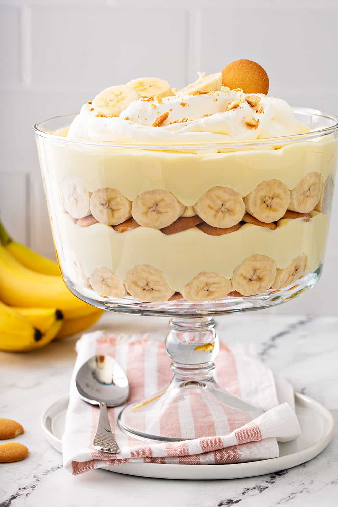

Banana Pudding

Description
Try not to eat it all in one day!
Ingredients
- 3/4 cup sugar, divided
- 1/3 cup all-purpose flour
- Dash salt
- 3 eggs, separated
- 2 cups milk
- 1/2 teaspoon vanilla extract
- 45 NILLA Wafers, divided
- 5 ripe bananas, sliced (about 3 1/2 cups), divided
- Additional NILLA Wafers and banana slices, for garnish
Directions
- Mix 1/2 cup sugar, flour and salt in top of double boiler. Blend in 3 egg yolks and milk. Cook, uncovered, over boiling water, stirring constantly for 10 to 12 minutes or until thickened. Remove from heat; stir in vanilla.
- Reserve 10 wafers for garnish. Spread small amount of custard on bottom of 1 1/2-quart casserole; cover with a layer of wafers and a layer of sliced bananas. Pour about 1/3 of custard over bananas. Continue to layer wafers, bananas and custard to make a total of 3 layers of each, ending with custard.
- Beat egg whites until soft peaks form; gradually add remaining 1/4 cup sugar and beat until stiff but not dry. Spoon on top of pudding, spreading evenly to cover entire surface and sealing well to edges.
- Bake at 350°F in top half of oven for 15 to 20 minutes or until browned. Cool slightly or refrigerate. Garnish with whipped cream, additional wafers, and banana slices just before serving.